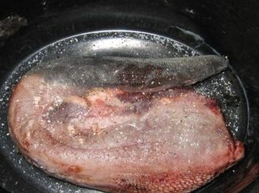
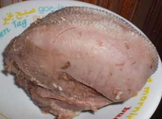
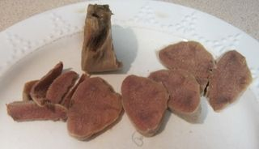
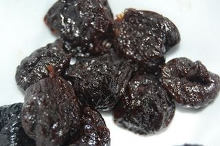
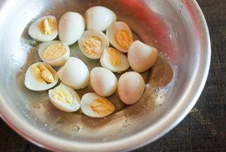
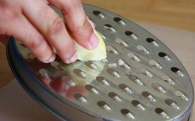
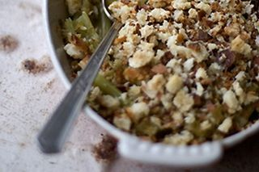

Шаг 1: Подготовить ингредиенты.

Говяжий язык промываем под холодной проточной водой. В кастрюлю перекладываем целым куском, заливаем холодной водой, чтобы покрыло язык, ставим на плиту и доводим до кипения. После закипания на поверхности появится пенка, её следуёт убрать шумовкой, убавляем огонь до среднего и варим говяжий язык в течение 2-3 часов. Добавив немного поваренной соли в кастрюлю, следим за тем, чтобы не выкипела вся вода, при необходимости добавляя по немного. Готовность языка проверяем вилкой или ножом, если легко протыкается, значит готово.

Вынимаем из горячей воды и сразу перекладываем в холодную, снимаем с поверхности жесткий слой, который в пищу не годится

Говяжий язык нарезаем на разделочной доске на мелкие кубики, перекладываем на тарелку и откладываем в сторону.
Шаг 2: Подготовим чернослив для салата.

Если чернослив с косточкой, тогда следует её вынуть, промываем хорошо под холодной водой несколько раз и нарезаем длинными тонкими полосками, перекладываем в отдельную посуду.
Шаг 3: Подготовим перепелиные яйца для салата.

Перепелиные яйца ставим в посуду для варки, заливаем холодной водой и варим до готовности в течение 8-10 минут. Готовые перепелиные яйца ставим под холодную воду и остужаем. Яйца натираем тёрке средней величины и откладываем в сторону.
Шаг 4: Подготовим яблоко для салата.

Яблоко моем хорошо под водой, очищаем от кожуры, сердцевины и хвостиков. Натираем тёрке крупной величины и сбрызгиваем соком лимона, чтобы не потемнело.
Шаг 5: Подготовим грецкие орехи и сыр для салата.

Чищеные грецкие орехи измельчаем на разделочной доске, сыр натираем на крупной терке. Перекладываем по тарелкам.